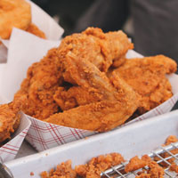
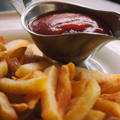
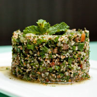

Not is our food good, it's also good-looking! Our patrons often stop to admire our fare with a quick Instagram before digging in. We've collected a few of our favorite shots here.
We start our day at the crack of dawn to bake our own muffins, bread, and dinner rolls. Loaves not used that day are donated to the local food shelter.

People come from all over to enjoy our lovingly made burgers. We grind our own locally-sourced organic beef and turkey so you know it's fresh and free from fillers and other nonsense. Go for one of our creative topping combos or stick with the classics.

Our chef works with local fisherman to pick the freshest the sea has to offer for our daily seafood special. Our Roast Cod Caponata with Roasted Potatoes is an old favorite with our regulars.

Our chicken fried tenders feature juicy, tender chicken coated in a crispy, golden-brown breading. Served hot and full of flavor, they're a comforting favorite that's perfect for dipping in your favorite sauce.

Our golden French fries are crispy on the outside and tender on the inside. Lightly seasoned and served hot, they make a delicious satisfying side dish.

Our fresh tabbouleh is a delicious Mediterranean salad made with finely chopped parsley, tomatoes, bulgur wheat, and a bright lemon dressing. Refreshing and full of fresh flavors, it's a delicious accompaniment to any meal.